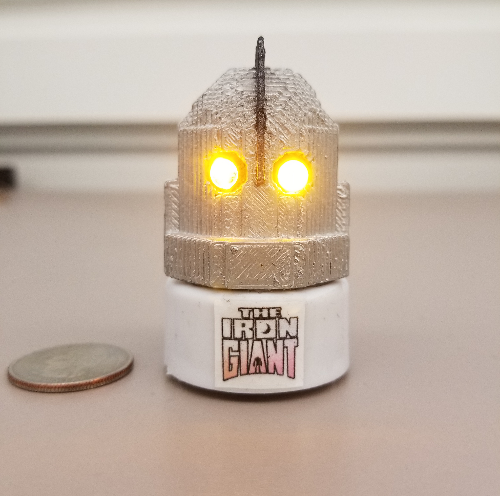

3D Print
Once we finished modeling our object in Minecraft we then took it from the server and imported it as a local world file. This made it so we could use a program to extract the object as a 3d model. Because my object was a hollow shell it had trouble getting the bottom layer so there was a big hole in the model.
Since this wouldn't be good for 3d printing I took the model into Tinkercad and filled up the hole with a bunch of squares and rectangles. I designed it with the back of the head flat so it could lay on it and print easily without needing any supports.

After it finished printing I decided to put my artistic skills to work for the post processing. I painted the body silver and the top head scythe with a mix of silver and black. The eyes I painted yellow so it'd show behind the clear LEDs.
Next to it is a quarter for reference to show the scale of it's size.
To really make it feel like a robot I decided to add LEDs for it's eyes. To do this bought some tea light candles and removed a LED from one to wire to the other so it'd have two. Then I positioned the LEDs so the positive ends were next to each other in the middle, making it so I only needed 3 wires to go down to the battery.
The candle base ended up being a nice stand for the print, and with the printed Iron Giant logo on it really brings the piece together.
